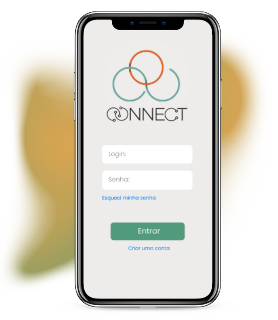
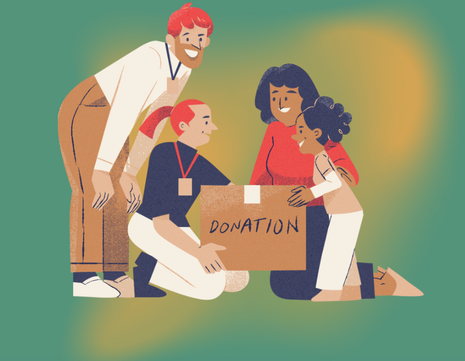

Conheça a Connect, aplicação gamificada que interliga ONGs a voluntários

Quem somos?
O Connect é uma plataforma inovadora criada para interligar ONGs e voluntários de maneira eficiente e divertida. Utilizando elementos de gamificação, incentivamos a participação em atividades sociais, recompensando voluntários por seu tempo e esforço. Nosso objetivo é simplificar o processo de voluntariado, tornando-o acessível e gratificante para todos. Com o Connect, você pode encontrar ONGs que compartilham suas paixões, completar missões e ganhar reconhecimento na plataforma e na vida real.

Cadastre-se
Selecione abaixo como deseja se cadastrar e preencha o formulário para criar sua conta e começar sua jornada: